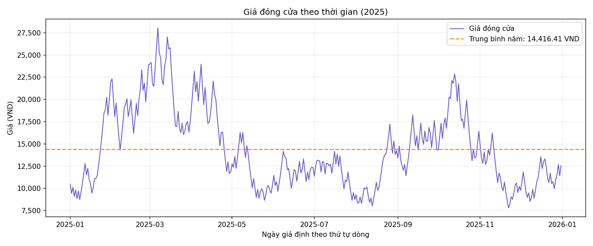
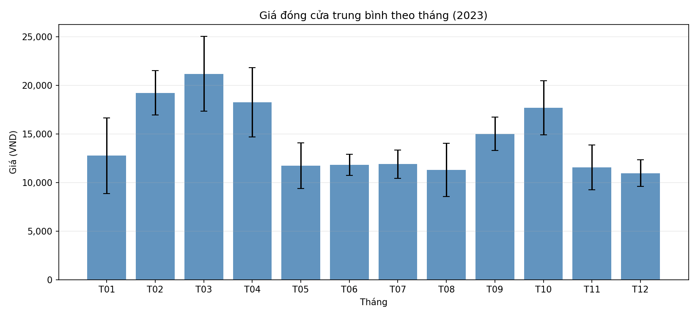
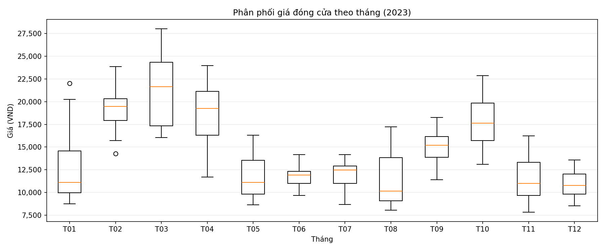
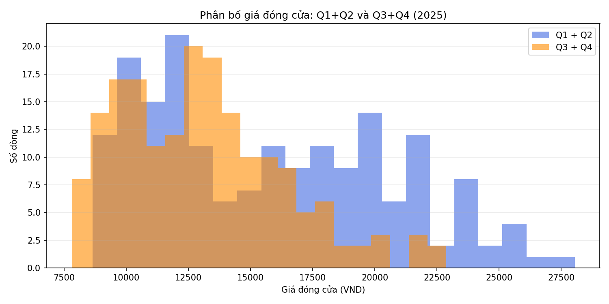

MÔ PHỎNG BIẾN ĐỘNG GIÁ CỦA MỘT MÃ CHỨNG KHOÁN
Tham chiếu
Sàn (90%)
Trần (110%)
Nhỏ hơn tham chiếu
Lớn hơn tham chiếu
Toàn cảnh biến động giá trong năm
Khám phá diễn biến giá đóng cửa, nhịp biến động theo tháng và các mốc được gắn nhãn giá sàn/giá trần trong bộ dữ liệu minh hoạ.
Lưu ý: Đây là dữ liệu giả định dùng cho mục đích minh hoạ, không đại diện cho mã chứng khoán hay tài sản cụ thể.

KHÁM PHÁ DỮ LIỆU
Bốn góc nhìn về mức giá



ĐỌC BIỂU ĐỒ
Những điểm đáng chú ý
Biên độ trong năm khá rộng
Giá trong mẫu dao động từ khoảng 7.029 đến 30.945 VND. Đỉnh cao nhất xuất hiện trong quý I theo biểu đồ xu hướng.
Mức giá thay đổi theo từng giai đoạn
Trung bình tháng cao hơn vào đầu năm và tháng 10; các tháng giữa năm có mức giá thấp hơn trong mẫu.
Mức độ rủi ro qua các ngày bất thường
Trong vòng 1 năm, có tới 208 ngày giao dịch bất thường (chiếm tỷ lệ rất lớn). Trong đó, có 106 ngày giá đóng cửa chạm mức Giá trần và 102 ngày rơi xuống mức Giá sàn.
PHƯƠNG PHÁP & TỆP NGUỒN
Phương pháp luận và Dữ liệu phân tích
1. Phương pháp phân tích
- Phân tích xu hướng (Trend Analysis): Quan sát đường đi của giá qua từng tháng để xác định chu kỳ tăng/giảm, các mốc đạt đỉnh và chạm đáy trong năm dựa trên biểu đồ đường (Line chart).
- Phân tích phân phối và độ phân tán (Distribution & Dispersion Analysis): Đánh giá mức độ biến động giá trị (từ giá thấp nhất đến cao nhất), giá trị trung vị và các điểm ngoại lệ (outliers) của từng tháng thông qua biểu đồ hộp (Boxplot). Đối chiếu sự thay đổi cấu trúc giá giữa nửa đầu năm và nửa cuối năm bằng biểu đồ tần suất (Histogram).
- Đo lường giá trị trung tâm: Xem xét mức giá đóng cửa trung bình của từng tháng và mức độ sai số/độ lệch chuẩn (thể hiện qua thanh sai số) từ biểu đồ cột (Bar chart).
- Xử lý dữ liệu định lượng bằng Python (Quantitative Analysis): Sử dụng thư viện pandas để đọc và thống kê tệp dữ liệu thô, đếm số lượng các phiên giao dịch có biến động kịch độ (giá trần và giá sàn) để đánh giá mức độ rủi ro của tài sản.
2. Đặc tả dữ liệu nguồn
Báo cáo sử dụng các biểu đồ trực quan và tệp dữ liệu CSV được cung cấp trong thư mục phan_tich_gia. Cụ thể, tệp dữ liệu tập trung vào các ngày có giá đóng cửa bất thường với 208 quan sát (các ngày ghi nhận không mang tính liên tục).
Các chỉ số thống kê tổng quan được tính toán trực tiếp từ cột Gia_dong_cua. Trạng thái biến động kịch biên độ được xác định và phân loại dựa trên cột Bat_thuong (bao gồm trạng thái "Giá trần" và "Giá sàn").